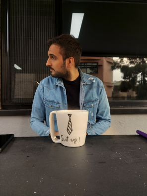

Staircase Collection
Inspired by the symbolism of progress and transition, this collection transforms everyday items with stair-like designs. Each piece adds meaning to routine objects, reminding us of the small steps that shape our lives.

Dreamy Stairway
This piece invites you to envision yourself as a tiny traveler, exploring each step in a world beyond the ordinary.
The Character Series
In this collection, I drew inspiration from the unique personalities and characteristics of my friends, translating their traits into physical forms within my pieces.


Inspired by a creative colleague, this piece symbolizes his innovative thinking and problem-solving skills. I depicted plants growing from his brain to represent the flourishing of his ideas.